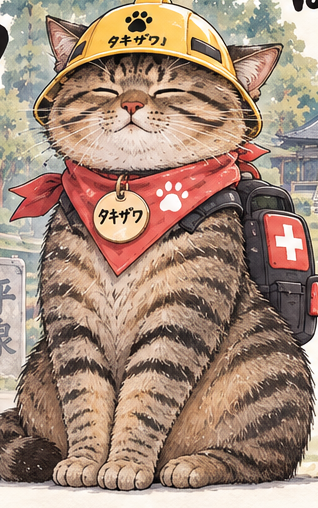
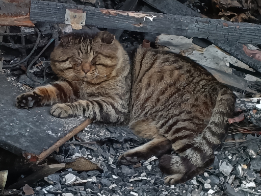
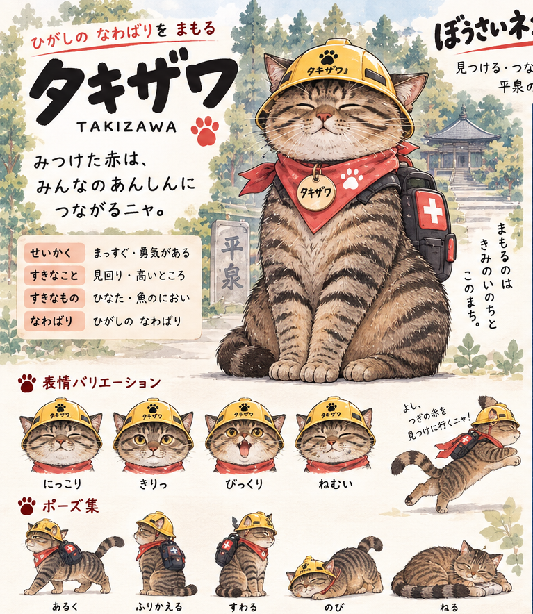

PERSONA ／ cat_002 ● LINK
EXPRESSION
にっこり
みつけた赤は、みんなのあんしんに つながるニャ。
タキザワTAKIZAWA ／ EAST
はいれる東のなわばりの猫に入る人格。いま、体を持っている。プレイヤーが選ぶのはこの人格。90秒だけ、猫の中で一緒に町を見る。
 PERSONA
PERSONA
LINK 90s

BODYなまえ
タキザワ
なわばり
ひがしの なわばり（中尊寺通り周辺）
せいかく
まっすぐ・勇気がある
すきなこと
見回り・高いところ
すきなもの
ひなた・魚のにおい
座標
38.98886, 141.11670 ／ R 122m
名づけ主
Code for hiraizumi
RED MARKS ／ 赤いしるし 4
みなみ 50mみなみにし 70mきた 80mきたにし 120m
CHARACTER SHEET ／ 全体を見る
